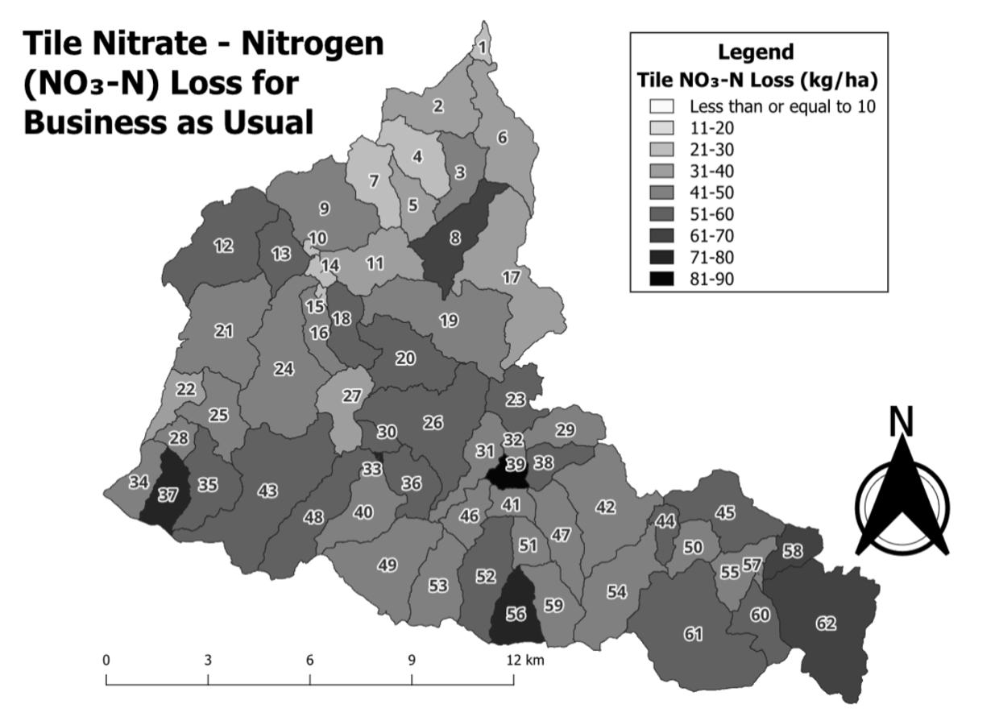

Integrated Landscape Management(ILM) Model Bioenergy Crop Comparison to Business as Usual(BAU) Model
Select Marginality:
Nitrogen Loss
Sediment Yield
Select Bioenergy Crop:
Switchgrass
Willow
Big Bluestem
Drag the Slider to Choose An Image:
BAU
ILM

Each numbered section is an individual watershed.